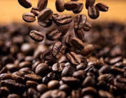
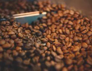
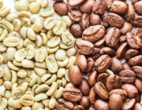

{kind=link}
Ilustração de Café
{kind=link}
Ilustração de grãos de Café
{kind=link}
Grãos de Café sendo processados
{kind=link}
Dois tipos de Café
CARACTERISTICAS DO FRUTO
Forma e cor: As cerejas do café são geralmente redondas ou ovais e variam em cor do verde ao vermelho, amarelo ou até roxo, dependendo do grau de maturação. O estágio de maturação afeta o sabor do café. Número de camadas: As cerejas do café são compostas por múltiplas camadas. A camada externa é chamada de casca ou exocarpo, seguida pela polpa ou mesocarpo que envolve a semente. A semente é chamada de endosperma ou núcleo, que é como costumamos chamar de grão de café. Cascas e Mucilagem: Durante o processamento do café, as cascas e a mucilagem (a substância pegajosa entre as cascas e as sementes) são removidas. O método de processamento (lavado, natural, mel, etc.) determina a quantidade de mucilagem que permanece no feijão e afeta o sabor final.Número de sementes: Cada cereja de café geralmente contém duas sementes (grãos de café), mas algumas variedades podem ter apenas uma. O grão único é denominado "caroco" ou "peaberry". Sabor variável: A qualidade e o sabor do café são afetados por fatores como espécies de plantas, altitude de cultivo, condições climáticas e métodos de processamento. As cerejas de café possuem diferentes camadas e características que desempenham um papel importante na determinação do perfil de sabor do café.Altitude de cultivo: A altitude de cultivo do café também afeta as características do fruto. O café cultivado em altitudes mais elevadas tende a amadurecer mais lentamente, resultando em sabores mais complexos e acidez mais pronunciada.Variedades: Existem diferentes variedades de café, como Arábica e Robusta, cada uma com características próprias de sabor e aroma. A variedade afeta a complexidade e a variedade dos perfis de sabor do café.